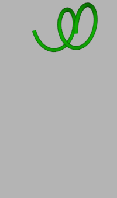

|
ロープ タグ
このロープタグは、ロープの物理的な振る舞いをシミュレートために使用する事ができます。使用するには編集可能なスプラインオブジェクトにこのロープタグを適用し、ダイナミクスを On にするだけです。スプラインのコントロールポイントを他の剛体に固定するには、アンカータグを使用して下さい。
ロープを使用したシミュレーションは、グローバルな座標系で実行されます。スプラインの移動変形プロパティ（移動・回転・拡大縮小）は、シミュレーションに影響しません。

Simple rope simulation.
-
- ロープを使用したシミュレーションは、スプラインのコントロールポイントのみをアニメーションし、その接線のベクトルは変化させません。そのため、スプラインのプロパティをタイプ：リニアにしておく事をお勧めします。
- ロープを使用したシミュレーションは、コントロールポイントを最大10000個に制限しています!!!
- ロープが他のオブジェクトを突き抜けてしまう場合、ロープタグのソルバー解析回数プロパティや、ダイナミクス環境設定の精度を増やす事で改善するかもしれません。
注意：ロープタグは編集可能なスプラインオブジェクトにのみ適用する事ができます。
プロパティ
- 質量: ロープの重さを設定します。
- 剛性: ロープの固さを設定します。低い値はゴムひものような結果になり、高い値はより固いひもを生成します。
- 減衰: コントロールポイントの線形の動きが減衰する強さを設定します。高い減衰値にすると、ロープの動きは早く止まります。
- 動摩擦: ２つのオブジェクト間の摩擦による影響をどれだけ強く受けるかを設定します。
- 形状維持: このプロパティが使用すると、スプラインは最初の形状を記憶し、その形状に戻ろうとします。
- マージン: 当たり判定の許容距離。ロープの場合、このマージンはロープ断面の半径と見なす事ができるでしょう。マージンは、絶対に 0 にするべきではありません。
- 曲げ抵抗: この値は、各コントロールポイントが互いに影響を及ぼしあう隣接する最大範囲を設定します。高い値で、より固いロープを生成します。
- ソルバー解析回数: 高い値にすると、物理ソルバーがフレーム毎のシミュレーション計算回数が多くなります。より高い値にすると、計算時間は増えますが、より精度の高いシミュレーション結果を生成します。特にロープが他のオブジェクトを突き抜ける様な場合には、高いソルバー解析回数の値でこの問題が解決するかもしれません。
|